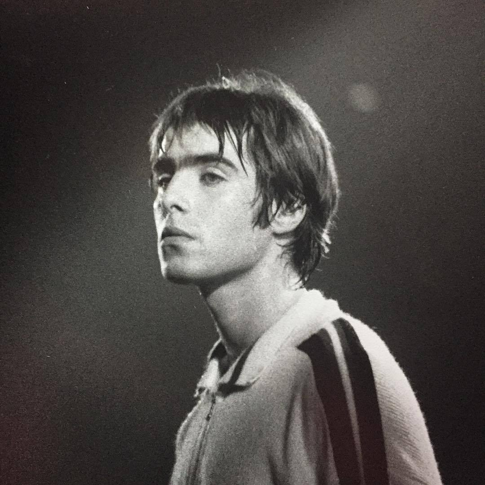
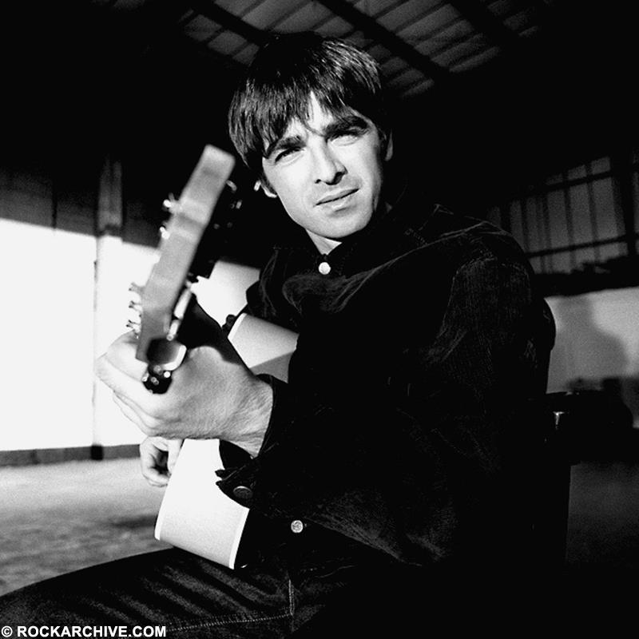

The Gallagher brothers behind Oasis

William John Paul Gallagher (born 21 September 1972) is an English singer and songwriter best known as the lead vocalist of the rock band Oasis. His distinctive voice and charismatic stage presence helped define the Britpop era of the 1990s.
Liam co-founded Oasis in 1991 in Manchester with Paul Arthurs, Paul McGuigan, and Tony McCarroll. His brother Noel Gallagher later joined the band and became the primary songwriter.
Liam became famous for songs such as Wonderwall, Live Forever, and Champagne Supernova. After Oasis disbanded in 2009, he continued his career as a successful solo artist.

Noel Thomas David Gallagher (born 29 May 1967) is an English musician, singer, and songwriter. He was the lead guitarist and main songwriter of Oasis.
Noel wrote many of Oasis's most famous songs including Don't Look Back in Anger, Wonderwall, and Champagne Supernova. His songwriting played a major role in making Oasis one of the most successful bands of the 1990s.
After Oasis split in 2009, Noel formed the band Noel Gallagher's High Flying Birds and continued releasing critically acclaimed music.